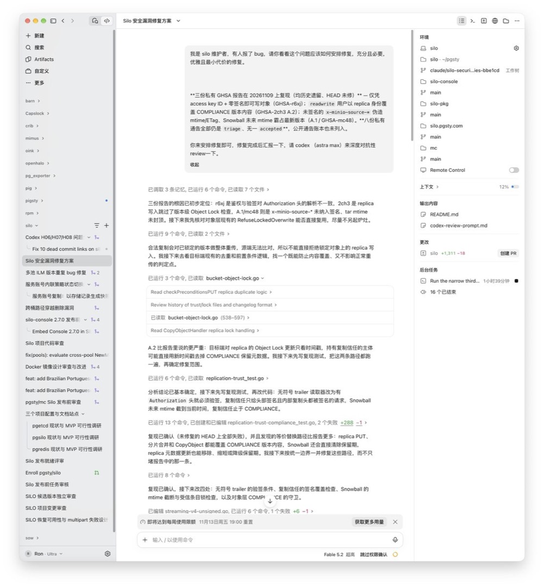
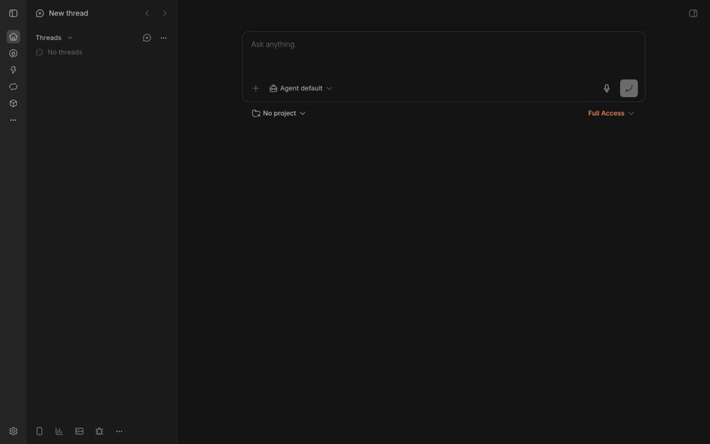

本期速览
01 Magpie 反代订阅供多 Agent 共用
02 Baseten 发布 264 页推理工程教材
04 Claude Code 接免费模型供应商池
05 BB Box 为每个线程分配独立机器
06 Agent Loop 需要 Harness 兜底
01｜Magpie 反代订阅供多 Agent 共用
来源（X） · @chasen_liao · 2026-11-10 23:30
介绍一下我的玩法：
1. 小号订了 Jio 的 Gemini Pro，在我的 VPS 上用 Magpie 把它反代出来
2. Magpie 只监听 Tailscale 内网地址，不开任何公网端口，等于一条私人局域网 API
3. 通过 CCW 接入本地的 Pi
4. Grok Bot 也接上了：Bot 只负责拆任务和验收，具体执行全部丢给 Pi，跑完用 webhook 把 Bot 叫醒来检查
最后的效果：
Gemini Pro 订阅 → Magpie 反代（VPS）→ Tailscale 内网 → Pi → Grok Bot
一份订阅额度，本地 agent 和 Grok Bot 一起用
Grok Bot 的额度只花在「想」和「验收」上，「干活」全走 Gemini 的额度，省了一大截
这个后面出一期详细教学😁
02｜Baseten 发布 264 页推理工程教材
来源（X） · @baseten · 2026-09-29 02:27
中文译文
推理工程还没有教科书。于是我们写了一本。264页，免费PDF和有声书。
原文
Inference engineering doesn't have a textbook yet. So we wrote one. 264 pages, free PDF and audiobook.
03｜Fable 5.2 为 Silo 挑出五缺陷
来源（X） · @RonVonng · 2026-11-10 17:13

04｜Claude Code 接免费模型供应商池
来源（X） · @HeLi8866 · 2026-11-10 11:04
GitHub 上有个仓库，能让 Claude Code 接到免费模型上用。
请求会转到 DeepSeek、Kimi 等约 49 家免费供应商，号称每月合计约 13 亿免费 token。
五分钟就能配好
星标已超 4.6 万，很多开发者多在用。
仓库：
https://github.com/Alishahryar1/free-claude-code
05｜BB Box 为每个线程分配独立机器
来源（X） · @victoraremu · 2026-11-11 04:20
中文译文
我想分享一个改变了我工作方式的项目。
我的工作涉及桌面应用、移动应用、Web以及它们背后的后端。很长一段时间里，我的 agent 只能在它们运行的地方工作。如果某个变更需要检查 Windows 构建、在 iPhone 上试用应用，或者让后端在真实的 Linux 服务器上运行，那部分就回到了我手里。我启动虚拟机、打开模拟器、在机器之间复制东西。
于是我构建了 BB Box，一个 BB 插件，为每个线程提供一台电脑，叫做 box。一个线程可以拥有任意数量、任意类型的 box。
现在，线程会根据工作需要来申请：一个 Windows 桌面、一个 iOS Simulator 中的 iPhone、一个模拟器中的 Android 手机、一个用于后端的 Linux 服务器，或者一个用于 Xcode 构建的 macOS box。agent 几秒钟内就能获得它，在其中工作，完成后释放它。
box 从哪里来并不重要。我大多数的 box 运行在我的 Threadripper 开发机上，由 Proxmox VM、LXC 和一个 Mac Studio 集群驱动。当需要更多时，我从 http://boat.dev 或 Namespace（macOS VM）拉取相同的 box：相同的工具、相同的面板。
Agentic QA 是改变游戏规则的关键。我的 agent 不只是写代码。它们在应用发布的目标平台上运行应用，像人一样使用它：点遍 Windows 应用，点遍 iOS 和 Android 构建，以及在真实浏览器中操作 Web 应用。它们会录制每次测试运行的短片，并为每一步加上字幕，这样我不用问就能看到它们检查了什么。只在某个特定平台上出现的 bug 在我看到之前就被捕获了。
其他我每天依赖的功能：
- 我可以打开任何 box 的桌面，观察 agent，并接管控制。在我操作时 agent 会等待。
- 在执行有风险的变更之前，agent 会创建快照，我可以用撤销操作恢复它。
Monitor 在 BB 的侧边栏中显示所有 box 和机器。
- 将一个 box 添加为 BB 机器，用于超出线程生命周期的长时间模型训练运行，或用于我常驻的 agent。
使用 Box 文件浏览器来检查 agent 的工作成果。
真正的改变：我不再是我 agent 与我发布的平台之间的桥梁。
文档和快速入门：https://bbbox.dev
原文
I’d like to share a project that transformed the way I work.
My work spans desktop apps, mobile apps, web, and the backends behind them. For a long time, my agents could only work where they ran. If a change needed a Windows build checked, an app tried on an iPhone, or a backend run against a real Linux server, that part came back to me. I started VMs, booted simulators, and copied things between machines.
So I built BB Box, a BB plugin that gives each thread a computer, called a box. A thread can have multiple boxes of any kind.
Now a thread asks for what the work needs: a Windows desktop, an iPhone in the iOS Simulator, an Android phone in the emulator, a Linux server for the backend, or a macOS box for the Xcode build. The agent gets it in seconds, works in it, and releases it when it’s done.
It doesn’t matter where the box comes from. Most of mine run on my Threadripper devbox powered by Proxmox VMs, LXCs and a Mac Studio Cluster. When I need more, I pull the same boxes from http://boat.dev or Namespace (macOS VMs): same tools, same panel.
Agentic QA has been the game changer. My agents don’t just write the code. They run the app on the platform it ships to and use it like a person would: click through the Windows app, tap through the iOS and Android builds, and drive the web app in a real browser. They record short clips of each test run, with every step captioned, so I can see what they checked without asking. Bugs that only show up on one platform get caught before I ever look.
Other things I rely on daily:
- I can open any box’s desktop, watch the agent, and take control. It waits while I have it.
- Before a risky change, the agent takes a snapshot, and I can restore it with an undo.
The Monitor shows every box and machine in BB’s sidebar.
- Add a box as a BB machine for long model training runs that outlive a thread’s lifetime or for my always-on agent.
Use the Box file explorer to inspect the agent’s work.
The real change: I stopped being the bridge between my agents and the platforms I ship to.
Docs and quick start: https://bbbox.dev

06｜Agent Loop 需要 Harness 兜底
来源（X） · @it_works_123 · 2026-11-10 22:41
以为 Agent 就是一个 while(true)，不停调用大模型。
实际上，每轮模型会根据上下文决定：直接回答，还是调用工具。
如果调用工具，程序执行后把结果送回模型，再进入下一轮。
听起来很简单，直到你开始考虑：
工具失败怎么办？模型不返回怎么办？用户中途插话怎么办？任务什么时候结束？
普通 while 循环只需要判断条件。
Agent Loop 还得判断模型是不是在认真干活。
这下知道为什么 Agent 需要 Harness 了吧
模型负责决定下一步做什么，Harness 负责防止它把下一步变成下辈子